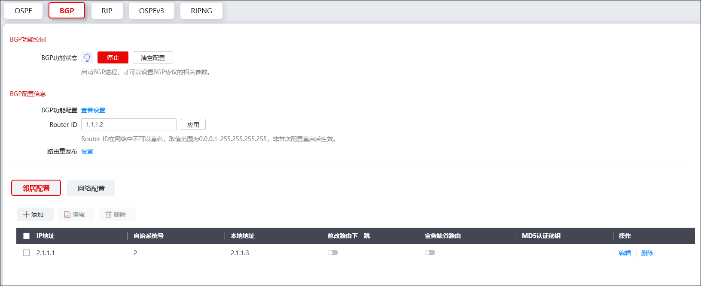
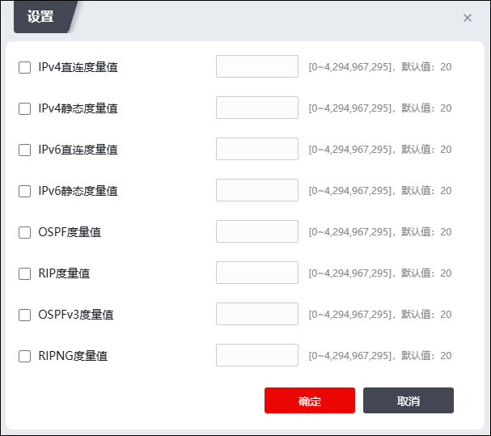
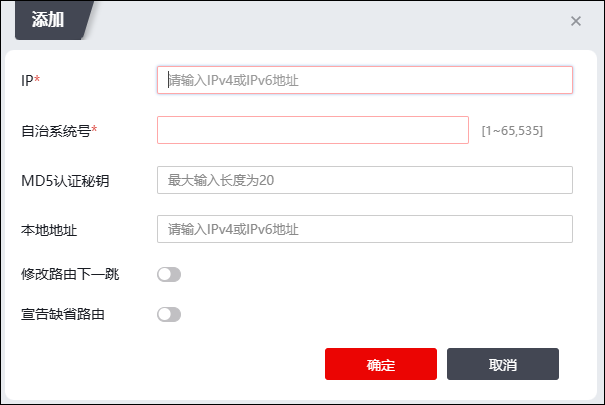
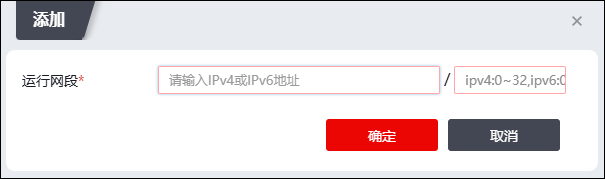

BGP(边界网关协议)是一种外部网关协议，主要用于控制路由的传播和选择最佳路由。发送BGP消息的路由器称为BGP发言者，它接收或产生新的路由信息，并发布给其他BGP发言者。当BGP发言者收到来自其它自治系统的新路由时，如果该路由比当前已知路由更优，或者当前还没有该路由，它就把这条路由发布给自治系统内所有其他的BGP发言者。
相互交换消息的BGP发言者之间互称对等体，若干相关的对等体可以构成对等体组。BGP功能分为BGP4和BGP4+两部分，BGP4相当于IPv4版本，BGP4+是对IPv6的拓展，但不是真正的v6版本。
| 步骤1 | 启动或停止BGP服务。 |
1）选择 。激活“BGP”标签页。如下图所示。

2）点击【启动】按钮便可启动BGP进程。只有启动了BGP进程，才可以设置BGP协议的相关参数。
3）点击【停止】按钮即可停止BGP进程运行。
4）点击【查看设置】按钮，弹出查看界面，可以查看BGP路由协议的配置、邻居、接口以及转发表信息。
5）点击【清空配置】按钮可以清空BGP配置信息，进程开启或关闭都可以清空配置信息。
| 步骤2 | 设置路由ID。 |
在“Router-ID”文本框中输入标识路由器身份的route-id，再点击【应用】按钮使设置生效。该项为必配项，因为route-id用于在OSPF协议中标识路由器，必须由管理员手动指定；route-id在网络中不可以重名，取值范围为0.0.0.1-255.255.255.255。
| 步骤3 | 路由重发布。 |
1）点击『设置』按钮，弹出重发布信息设置页面，如下图所示。

在设置BGP路由重发布时，各项参数的具体说明如下表所示。
参数 |
说明 |
|---|---|
IPv4/IPv6直连度量值 |
表示允许将直连路由信息引入到BGP路由中作为外部路由信息，并可在其后的文本框中设置路由引入后的metric值。取值范围：0-4294967295。 |
IPv4/IPv6静态度量值 |
表示允许将静态的路由信息引入到BGP路由中，并可在其后的文本框中设置路由引入后的metric值。取值范围：0-4294967295。 |
OSPF度量值 |
表示允许将OSPF的路由信息引入到BGP路由中，并可在其后的文本框中设置路由引入后的metric值。取值范围：0-4294967295。 |
RIP度量值 |
表示允许将RIP的路由信息引入到BGP路由中，并可在其后的文本框中设置路由引入后的metric值。取值范围：0-4294967295。 |
OSPFv3度量值 |
表示允许将OSPFv3的路由信息引入到BGP路由中，并可在其后的文本框中设置路由引入后的metric值。取值范围：0-4294967295。 |
RIPNG度量值 |
表示允许将RIPNG的路由信息引入到BGP路由中，并可在其后的文本框中设置路由引入后的metric值。取值范围：0-4294967295。 |
2）点击【确定】按钮完成BGP重发布度量值的配置，点击【取消】按钮撤销本次操作。
| 步骤4 | 邻居配置。 |
在某些非广播网络上，比如X.25、帧中继网络上，可以通过指定邻居IP地址的方式让BGP发送单播地址报文。对应设备接口都是以太网接口的广播网络时，也可以使用单播向指定的邻居发送路由更新信息。
1）在“邻居配置”页签处点击“『添加』”，进入“添加”界面，如下图所示。

2）设置BGP邻居的IP地址、自治系统号、MD5认证密钥和本地地址，并确认是否启用修改路由下一跳和宣告缺省路由，点击【确定】按钮完成BGP邻居的添加。
| 步骤5 | 网络配置。 |
由于运行BGP动态路由协议的设备需主动或根据邻居发送的路由请求消息通告其自身的路由信息，BGP任务启动后必须指定其工作网段。BGP只在其指定网段的接口上运行，对于不在指定网段上的接口既不接收BGP路由响应消息，也不发送BGP路由请求消息，即不在指定网段上的接口不会运行BGP协议。
1）在“网络配置”页签处点击『添加』，进入“添加”界面，如下图所示。

2）输入允许运行BGP协议的网段IP地址和掩码，点击【确定】按钮，完成设置。